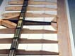

Use the provided check boxes to mark off your progress as you go.
Use the provided check boxes to mark off your progress as you go.
Use the provided check boxes to mark off your progress as you go.
Reconfigure your building surface for center panel construction.
Ideally, you want the center panel and complete mid panels.
You will build on top of the center panel layout and use the mid panels layouts to align the real mid panels as jigs for positioning the joiner boxes.
Lightly mist the back of your plans with spray adhesive, let dry and
smooth onto your building surface.
Cover your plans with wax paper and
tape around the edges to secure to your building surface.
Note: if you followed my original instructions for the tip and mid panels, then you might have used 3M Spray 77 to afix the plans to your building surface. While this worked, I needed to use a heat gun and great care to remove the plans as they were stuck firmly to my plate glass building surface. Perhaps this was because I left them afixed for over six months!
While I probably could have reused them after this rough treatment, I opted to print out a new complete wing layout and used the central 60 inches (not quite out to the tip panel break) which is the length of my plate glass building surface. If you plan on reusing your plans, DO NOT USE Spray 77. Instead, use 3M Spray Mount repositionable adhesive. Larger cans of this are available at art supply stores. If you really want to reuse your plans, then spray your glass with the adhesive, let dry, and smooth your plans onto that. This will leave the plans almost good as new when you are done, but you will eventually need to clean the gunk off your plate glass building surface.
Cut a strip of .014 inch thick mylar 1/2 inch wide by 30 inches long.
Lightly mist the mylar with spray adhesive and smooth it into position on your plans.
Locate the 1/2 inch by 30 inch tapered carbon fiber laminate for the center panel bottom spar cap.
You should have cut this to length when you originally built your tip panels.
Very lightly mist the laminate with spray adhesive and smooth over the mylar.
| 3M Spray 77 Results | Center Panel Plan & Mylar |
|---|
Adjust the joiner box assemblies for fit with the mid panels.
Start by sliding the joiner boxes onto the joiner rods and scribe a line on the top surface of each box, which is parallel to the mid panel end rib.
Adjust your belt or disk sander to the correct polyhedral half-angle (about six degrees).
Remove the material at the open end of the joiner box parallel to your scribe line.
Deburr and clean the insides of the joiner tubes before slipping them on to the joiner rods for clearance checking.
| Scribe Line Parallel to End Ribs | Adjusted Joiner Gap |
|---|
With the joiner boxes installed on their respective mid panels, prop the panels up in position over your plans.
If your building surface is long enough, you can make some jig blocks which have a 6 degree top face and a 3.3 inches tallest dimention.
This 3.3 inch vertical dimension should line up precisely with the tip panel polyhedral break.
Alternatively, you can reuse the shorter 1.8 inch tall jig blocks you made for mid panel construction. Conveniently, the mid panels will prop up against the tip panel jig blocks under their own weight; however, you will want to use some small bags of sand or shot to stabilize the panels from here on out.
| Mid Panel Prop Up | Whole Wing Mock Up |
|---|
Line the mid panel end rib faces up on the plan.
Check the panel sweep by lining up a building square with the LE and TE of the layout on your building surface.
The triangle actually needs to be tilted towards the center of the wing so that its plane lines up with the selected rib on the layout and the corresonding physical rib on the mid panel.
Adjust the sweep of the panel until any offset between the layout and the real panel is balanced between the LE and TE.
Check the tip panel break height.
It should be 3.3 inches off of your building surface.
Move the support jig blocks to achieve the correct dimension.
If the break is beyond the edge of your building surface, you may need to get creative with a building square, your scale, and some tape.
| Mid Panel Sweep Check | Tip Panel Break Height |
|---|
Now that your mid panels are jigged up in the correct position, mark the correct length for the joiner boxes.
Set your belt or disc sander square, and remove the material from the covered end of the joiner box.
Make sure the length and angle are correct by placing the correct rib (number six) in place and making sure it lines up with the layout.
Scribe lines on the tops of the joiner boxes which correspond to the fore and aft edges of the spar caps.
Remove this material from the joiner boxes using your belt or disc sander.
This step causes the joiner box to be roughly the same size as the spar webs (1/2 inch nominal but it's okay if it is a bit wider), with the joiner tube swept at the correct angle.
| Joiner Box Length |  | Joiner Box Rib Check | Joiner Box Sweep Adjustment |
|---|
Mix up a small batch of slow epoxy and thicken with cabosil to the consistency of vaseline.
Remove the joiner boxes from the mid panels and then butter the bottoms, place in position, and press to gently squeeze out the excess epoxy.
Scrape away the splooge, particularly at the open and closed ends of the joiner box.
You don't want to glue your joiners in on this step!
And you don't want hardened blobs where you'll be placing the first rib in the next step.
Carefully insert the mid panel joiner rods into the tubes and jig them up into the same position as before.
Weigh down the joiner boxes so they won't move.
Rerun the sweep and break height checks you did in Step 4.
Correct everything so it is as perfect as you can make it.
This is your last chance to get it right since after this step, the joiner box positions will be fixed.
Be careful not to disturb your setup while the epoxy cures.
| Curing the Joiner Boxes |
|---|
Locate the center panel ribs and cut them free from their 3/32 inch thick blank with a sharp X-acto.
Gently sand away any flash until it is flush with the rib contour.
You will be using ribs 2 through 6.
The number 1 ribs are cut into pieces and glued up to the bolt beam later.
Set them aside for now.
Locate the center panel webs and cut them free from their 1/4 inch thick blank.
The webs are numbered 1 to 5.
You will find four of each since they need to be ganged up in pairs.
Note they are very gradually tapered.
It helps to use a caliper to measure them to make sure you gang them up correctly.
Once you've figured out which way they are tapered, mark them on top so you can easily put them in the correct orientation later.
Working on a flat non-stick surface (like wax paper over plate glass), glue them together in appropriate pairs using medium CA.
When cured, lightly sand top and bottom surfaces to remove any CA or flash.
Make sure the epoxy from the last step is completely cured before proceeding.
You don't want the joiner boxes moving as you proceed.
Do a dry fit, stacking up the correct ribs and webs all the way across the entire spar.
Adjust the ends of the webs so that they enforce the correct rib angles and positions as you stack.
The wing bolt beam goes right in the center between the webs numbered 1.
Line the bolt beam up on the layout.
The holes may not match precisely.
It is more important that the beam is straight and on center.
If the beam is shorter than the layout, line it up according to the TE strip on the wing plan layout.
| Center Panel Dry Fit |
|---|
Before you start gluing, prepare the arrangement for clamping the spar down while it cures.
The spar is approximately .05 inches thicker at the center than it is at the joiner boxes.
If you plan on using a full length rigid plate to weigh down the spar, then the foam strips that go on top of the spar caps have to be tapered.
I chose to make the strips from some EPP foam I had handy.
I cut two strips 1/2 inch wide by 15 inches long which tapered from .2 inches to .25 inches over their length.
Later when weighing the spar down, the thinner portion of the stips is placed at the center of the spar, and the thicker portions over the joiner boxes.
If you use a more flexible straight edge or two 15 inch plates for clamping, then constant thickness 1/8 inch thick polypropylene foam would be fine.
Wax the strips to prevent them sticking to the top cap strip.
If you are using a rigid plate (such as a piece of plate glass), you will need to support one side of the plate off to the side of your spar. Stack up some scraps of wood or whatever is handy to block up the plate up at the same height as the finished spar. Try out your arrangement with the center webs in place, cap strips, and foam strips on top. Make sure the caps are being pressed down to the webs and the joiner boxes.
| Weight Mock Up |
|---|
Mix up enough epoxy to do the entire spar, a 20 gram batch ought to do.
You may have to recover some of the splooge and return it to your cup as
you work to make this do the whole spar.
Mix in cabosil to achieve the consistency of vaseline.
Start by buttering the entire bottom spar cap and closed ends of the joiner boxes.
Place the required number 6 ribs against the joiner box ends.
Gently press into place squeezing out excess epoxy.
Butter both ends of the number 5 webs, place into position against the just placed ribs, and gently press into place squeezing out excess epoxy.
Continue working both sides alternating ribs and webs until you get to the center.
At the center, the wing bolt beam goes in between the two webs numbered 1.
Use a bit of excess epoxy to make sure there are no gaps between the bolt beam and the bottom spar cap.
Also, fill the gap on top of the wing bolt beam with excess epoxy so that when you place the top spar cap in the next step, there are no voids.
| Buttered Bottom Cap | Rib, Web, Rib . . . |
|---|
Locate the two laminates for the center panel top caps that you cut when you built the tip panels.
One is constant thickness and the other is tapered.
Butter the entire face of one side of the constant thickness laminate.
Place it on top of the spar assembly, making sure it drops into the notches in the tops of the ribs.
Gently press into place and squeeze out the excess epoxy.
Repeat with the tapered laminate, placing it on top of the first.
Take this opportunity to scrape the excess splooge from the corners where the ribs and webs intersect.
You can leave the splooge which squeezes out from the spar caps for clean up later.
I chose to gently scrape most of the spar cap splooge away at this time.
One benefit of doing so is that you can more easily see whether or not the webs are correctly lined up with the spar caps.
Place several strips of tape across the spar sticking the ends down to your layout.
The goal is to form little tents which will prevent the cap strip from shifting as you compress the assembly.
 | Splooge Cleanup | Ready To Compress |
|---|
Make sure all the webs and ribs are in the correct position.
Slide the ribs up against the bottom spar cap by gently pushing them forward.
Make sure the webs are lined up with the cap strips.
If any ribs refuse to stay flat against the building surface, or have slight angles, you can hold them down and over as required with a bit of tape.
Place the strips of waxed foam on top of the cap strip.
If you are using tapered strips with a flat plate, make sure you place the thin part of the tapered strips at the center of the spar.
Place your flat plate over the assembly trying not to disturb the pieces.
Add bricks to the plate to compress the assembly. Don't be afraid to put more weights than I show here; the spar can take it and you want to make sure it is fully consolidated with no gaps.
You may optionally choose to place a straight edge and weigh it down on the rib TEs to keep them flat against the building surface.
| Spar Curing |
|---|
Go to bed. You will want to revisit the center panel when the epoxy has reached a leathery stage.
This will depend primarily on your epoxy and the ambient temperature.
For a long working epoxy (90+ minutes pot life), at reasonable room temperatures, this will probably be about six to eight hours.
Your mileage may vary, especially at higher ambient temperatures.
Until you have a feel for it, check your epoxy every hour or so.
When the epoxy has reached a leathery (green) consistency, unveil your handy work, and trim the excess splooge from around the spar caps with a sharp X-acto blade.
Try not to nick the ribs or wing bolt beam glass wraps.
This will not work if you forgot about it and waited too long - in this case, you’ll have to carefully sand the splooge away.
Round the edges of the spar caps between the ribs using some sandpaper glued to a block 1 to 1-1/2 inches wide.
The goal is to form a small radius so that the wraps of Kevlar tow will not be cut by a sharp corner.
Over the end bay where the joiner box is located, aggressively round off the sparcaps and ply webs and thin out the sparcaps as you approach the end.
The sparcaps ideally want to taper over the joiner bond, from their normal cross section at the next-to-end rib, down to zero at the end rib itself (don't go to this extreme, though).
The taper evens out the shear stresses and actually gives a stronger spar/rod and spar/tube connection.
Thinning the sparcap at the end rib also allows adding more Kevlar wraps right at the end to prevent bursting.
If the sparcaps are not thinned, the thicker Kevlar can protrude out of the airfoil contour on the bottom.
If you are brave and have steady hands, you can make much shorter work of rounding and thinning with a benchtop belt sander. If you remove the belt sander's table, you should be able to reach all desired edges without the ribs interferring. Don't try to go all the way up to the ribs and don't try to actually radius with the belt sander. Just knock the corners off and finish rounding especially up close to the ribs by hand. Wear a dust mask and if possible, hook up a vacuum to your sander to minimize airborne dust. It is also nice to use a brush attachment on your vacuum to clean the carbon dust off of your spar assembly. Avoid "wiping" off the dust as this will push it into the balsa leaving ugly smudges.
| Rounding Sparcaps | Thinning Sparcaps at Joiner |  | Sparcaps Thinned & Rounded |
|---|
Before wrapping the whole spar with kevlar tow, apply the extra cross wraps at the center to transfer loads from the spar to the wing bolt beam.
Two layers of wraps for 1/2 inch on either side of the bolt beam ought to do.
Anchor one end of the kevlar with a drop of CA.
Wind tightly and spread the kevlar out into a thin flat ribbon as you go.
Anchor the other end with a drop of CA and cut it free.
Cut two pieces of 2 oz fiberglass on the bias (+/- 45 degrees) measuring 2-1/2 by 4-1/2 inches.
A roll cutter works best for cutting glass on the bias.
Lightly mist the glass with spray adhesive.
Wrap both joiner boxes with two complete layers overlapping on one side (three layers where the overlap is).
Trim away any excess with scissors.
| Bolt Beam Cross Wraps |  | Cutting Glass | Wrapped with Glass |
|---|
Wrap the spar, from one end to the other with Kevlar tow.
First transfer the tow to a 1 inch dowel a few feet long, being careful not to twist it.
Use a drop of CA to anchor the tow at one end of the spar.
Hold the dowel to the floor with your feet to control the tension while you use both hands to carefully wrap the spar, flattening out the tow to a 1/8 inch ribbon as you go.
Anchor at the other end with another drop of CA and then cut it free.
Wrap the spar six turns per inch.
Apply two or three extra layers at the both ends to prevent bursting.
Take care to keep the glass from wrinkling as you wrap.
See Mark's Contruction Tips #1 for more details on spar wrapping.
Wet out the spar and blot away excess epoxy.
The glass/Kevlar wrap over the joiner bays is the most difficult to wet out.
After mixing the epoxy, apply it at the joiner bay first, when its viscosity is the lowest.
Light heating of the spar at that bay before epoxy is applied greatly enhances wicking (this is recommended with medium-viscosity epoxies like West 105/206).
The Kevlar on the rest of the spar wets out very easily without heating.
Blotting off extra epoxy is much easier if a bit of heat is applied.
Mask off the brass tube opening before wetting out the spar to prevent getting epoxy in it.
| Kevlar Wrapping | Wrapped, Wetted & Blotted |
|---|
Create the TE strip.
Start by gluing a 1/16 x 1/4 x 36 inch hard balsa stick to a 1/4 x 1-1/4 x 36 inch balsa aileron stock.
Glue these two strips together thin edge to edge using Titebond or Ambroid.
Following the plan, trim away a portion of the thicker part of the TE strip so you end up with a double-taper.
The finished strip should be about 1 inch wide at each end and 1-1/4 inches wide at the center where it will join the bolt beam.
Note the finished strip will be 30 inches long, but leave it an inch too long for now (1/2 inch extra on each end).
Notch the TE strip.
To form the notches, create a notching tool by gluing a 3/32 inch strip of sandpaper on to the edge of a piece of 6 x 1 x 3/32 inch hard balsa scrap.
Sand the 1 inch face of this tool down until sanding with the 3/32 inch edge makes notches which form a friction fit with the rib material.
Position the notches so that the ribs seat into the strip about 3/32 inch - you will probably need to trim off the TE ends of the ribs.
Glue the TE strip in place. Place a blob of Titebond in each notch.
Also apply some to the end of the wing bolt beam where it butts up against the TE strip.
Carefully install all the rib ends into the notches until they bottom out.
On a flat surface, push the ribs down so they are flush with the TE strip on the bottom surface.
Turn the panel over and inspect to make sure they are all flush.
Wipe away excess glue with a damp cloth.
Weigh the panel and TE strip down to your building surface.
Place some bottom sheeting material under the LE of the ribs for support and let cure.
| Trimming TE Strip |  | TE Strip, Notched & Installed |
|---|
When the TE strip is cured, create the TE gussets, wing bolt beam braces, and LE nose block.
You can use scraps from the aileron stock for the TE gussets.
Follow the plan to obtain the proportions.
For the the braces, use a 1/2 inch square balsa stick, or you can use scraps from the 1/4 inch thick end rib blanks laminated with medium CA.
The nose block should be about 3/8 inches wide to match the wing bolt beam, and 1/2 inch tall.
Note if your wing bolt beam is a little short, leave the nose block long enough to support the inner LE strip which you will attach later.
Mix up a small batch of epoxy and thicken to vaseline consistency with cabosil.
Glue the TE gussets, wing bolt beam braces, and nose block in place.
Note the braces and nose block are thicker than they need to be at the LE of the wing.
You will trim the contours later.
For now, line the top surfaces up with the top of the spar.
Scrape away all excess splooge now to make it easier to shape these balsa pieces to the correct contour later.
The TE gussets are visible in the TE strip notch photo above.
| Beam Blocking (View From Top) | Beam Blocking (View From Bottom) |
|---|
When the blocking in the previous step is cured to at least the leathery stage, locate the two center Number 1 ribs.
Invert the panel on your building surface and place the two ribs on top, lined up in the correct fore/aft position relative to the spar cap.
Mark the locations on the ribs where the blocking intersects the wing bolt beam.
Section the ribs into three pieces to fit in between the blocking.
If you are anal about it, you will need to section the pieces at various bevel angles for a close fit.
Do a dry fit as you work.
Place a straight edge across the spoiler notch to make sure your ribs are in the correct location.
| Center Ribs Sectioning Marks | Center Ribs Dry Fit |
|---|
Mix up a small batch of epoxy and thicken to vaseline consistency with cabosil.
Butter the appropriate pieces and gently press into position to squeeze out excess epoxy.
Scrape away all excess splooge now as it would be difficult to trim it away later.
There are some small spots on the lower surface of the rib contours (where the bolt beam braces are) that you can fill with some strips of balsa cut to fit as you glue.
The aft portions of the ribs can be postitioned accurately by pressing them down to your building surface while the panel is held down flat.
The other pieces can be aligned by placing a straight edge across the other ribs in the panel, and using the straight edge to "project" the correct height to the center rib pieces.
Mark points out that these center rib pieces are not highly stressed and you can substitute five minute epoxy if you are in a hurry.
When you are satisfied with the center rib piece alignment, scrape off any remaining splooge, and weigh the panel down to your building surface.
Support the lower LE ribs with the lower sheeting material and let cure.
| Center Ribs Piece Alignment | Center Ribs LE Pieces | Center Ribs Curing |
|---|
| Revised 5/2/2002 James R. Osborn |
|---|
{kind=link}
{kind=link}
{kind=link}
{kind=link}
{kind=link}
{kind=link}
{kind=link}
{kind=link}
{kind=link}
{kind=link}
{kind=link}
{kind=link}
{kind=link}
{kind=link}
{kind=link}
{kind=link}
{kind=link}
{kind=link}
{kind=link}
{kind=link}
{kind=link}
{kind=link}
{kind=link}
{kind=link}
{kind=link}
{kind=link}
{kind=link}
{kind=link}
{kind=link}
{kind=link}
{kind=link}
{kind=link}